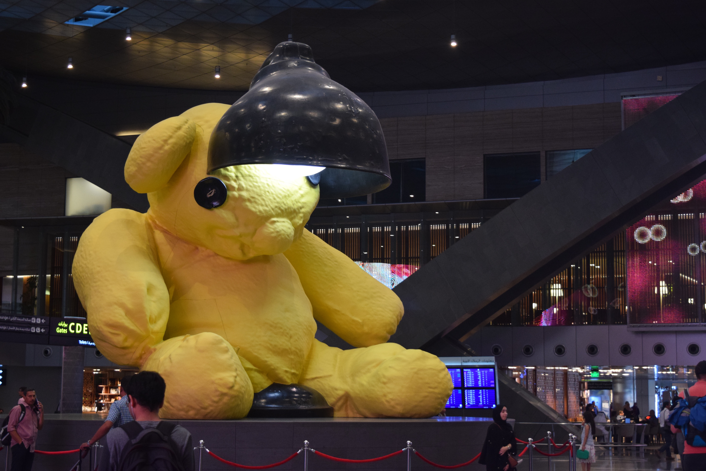
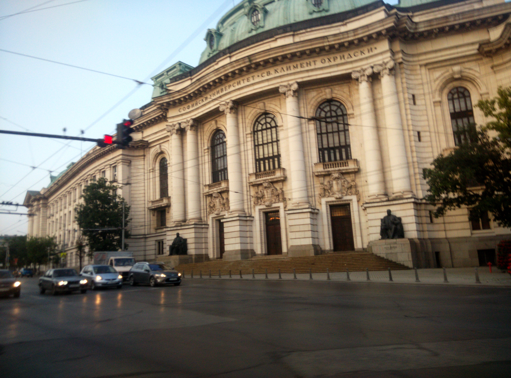
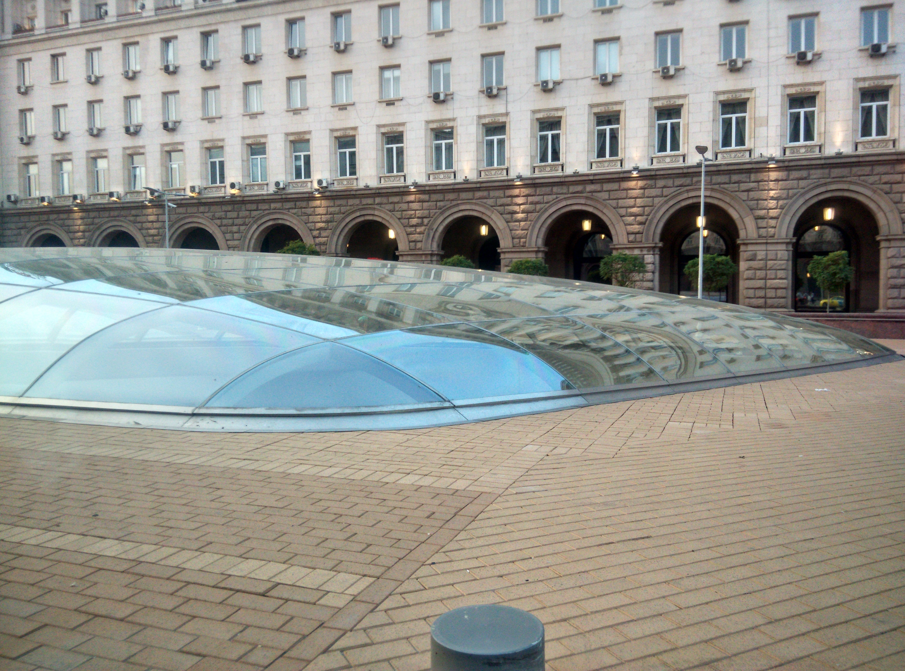
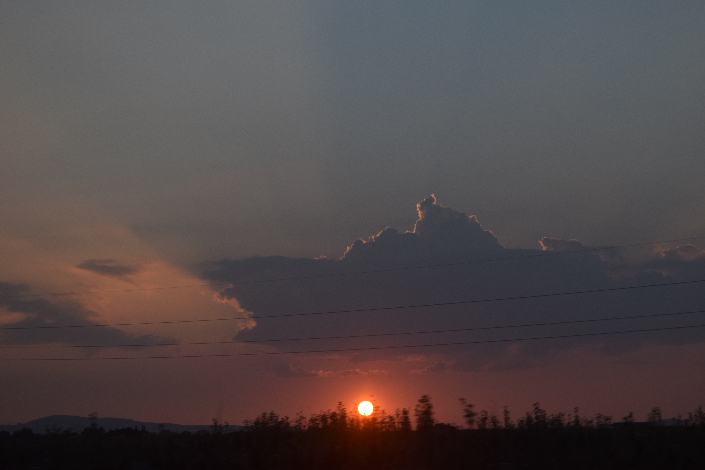
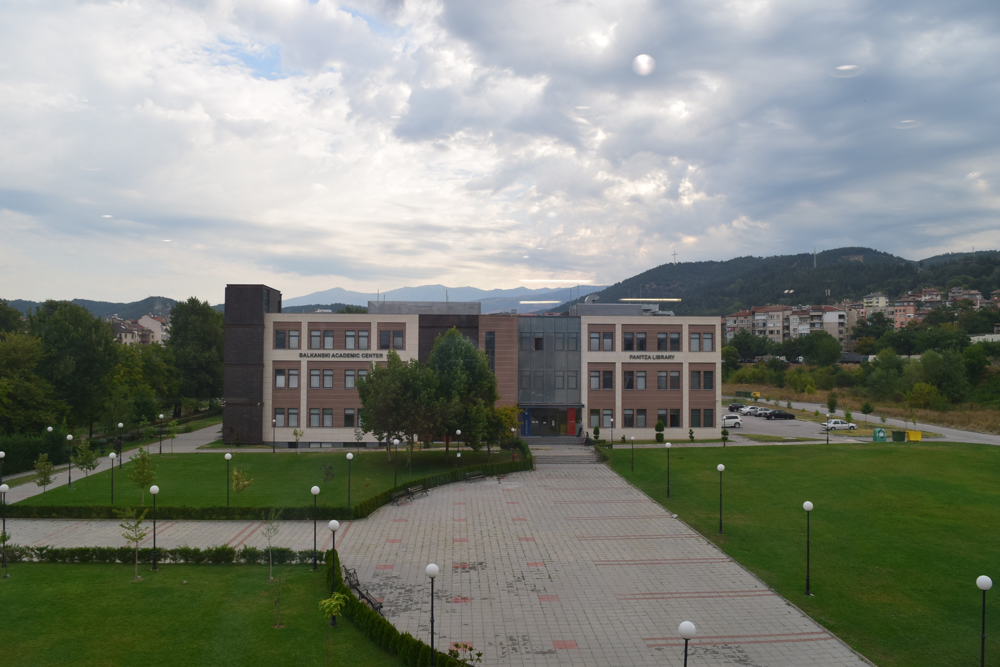

This post is the first in a series about my time at the Summer Research School (HSSI) 2016 held at the American University in Bulgaria in August. TL;DR I had a phenomenal time. Take my word for it and go attend SRS next year!
The Background Story
I have really wanted to go to MIT RSI ever since I got to know about it in late 2014. Just like last year, I filled the application form and emailed them. And just like last year, I got a reply stating that Indian citizens are ineligible because of the lack of sponsors. Curiously enough, their reply included a link to a CEE webpage about other branches of RSI around the world which I knew about but had never seriously considered. I opened the page and got ecstatic on seeing that IIT Madras has an RSI program. After all, what could be better than a research school in my own country? I wrote to them immediately.
Well, they didn't take long to disappoint me. Apparently only students from Chennai and the surrounding regions were eligible to apply. These 'artificial restrictions' [1] always sadden me to no end. Anyway, I was undeterred and continued looking for others.
That is when I found SRS, and I am so glad I did! I distinctly remember being excited after a long time, after the college decisions debacle and all the stuff that came with it. Sure, I was excited but that didn't mean I filled the application immediately. As usual, I added a reminder and went on with my explorations in the more interesting territories of designing Jigsaw puzzles with identical tiles using tesselation and trying to make recordings of my voice sound like Taylor Swift's[2]. I told Tarun and Parth about it rather enthusiastically and they ended up applying as well. I filled the application form on the last day, pondered over the stuff I'd written for an hour, and finally hit the submit button with little hope.
After a long, exhausting month, I finally received the news that I had been accepted, and HSSI graciously gave me a generous scholarship. Hold on to your chairs, it gets weirder from here. As quite a few people know, I was planning to attend University X starting this year, and classes there started early September, which meant that I couldn't even think of attending without messing up my university plans and preparation. In addition, I somehow fell sick yet again around the time I received my SRS acceptance with nary a clue about when I would get better. So all in all, I gave up the idea of attending and instead spent my time in completing first year university syllabus.
In a rather fiendish twist in the tale, University X's admissions office personnel turned out to be incompetent ignoramuses who were unable to read some simple English language text off a webpage I sent them. After a bunch of other goof-ups on X's part and a long discussion with a couple of professors and mentors, I finally chucked the idea of attending X on precisely the 23rd of July. By then my eye had gotten better, and in a desperate, last-ditch effort I emailed Ms. Vassileva to ask if I could still attend SRS. To my utter delight, she sent an affirmative reply within minutes.
At this point, the only issue was getting a Bulgarian visa. Tarun and Parth both had their separate horror stories about how much time the Bulgarian embassy took in issuing the visa, so I had little hope. I called the Bulgarian embassy up to request an appointment on Monday, and the latest one they could offer happened to be on Wednesday, the 27th of July. I was destined to rot in a corner of my glow-in-the-dark star studded room staring at my computer! Until I was not.
Thanks to a letter sent by Ms. Vassileva and the Union of Bulgarian Mathematicians, the embassy processed my application on priority and I finally got my visa less than two days before my flight was scheduled! It was one wild journey that didn't seem to end.
The journey to Blagoevgrad
Tarun and I decided to fly together on Qatar Airways, mainly because their tickets were refundable and the flights did not go through Istanbul. Funnily enough, we were interrogated at every single step before boarding about the purpose of our visit, as if we hadn't been through all that to get the visa. My flight to Sofia was pretty much uneventful except a few surprises like the giant teddy bear with a giant table lamp going through it's head at Doha's Hamad International Airport. Oh, and our flight from Doha to Sofia happened to be ridiculously empty so nearly every passenger had an entire row to themselves which was awesome by definition.

When we arrived at the Sofia airport, the immigration officers let me through without an issue, presumably because Parth had been through in the morning (and had his own funny story to tell), but they stopped Tarun and made him wait for 20 minutes on the side while they dealt with the rest of the queue. Apparently the Indian airport officials being themselves, had put the departure stamp against his Italian Schengen visa, leading to some issues.
No, I didn't forget to write about Parth's story even though I'm sure everyone at SRS knows about it by now. He traveled via Aeroflot (yes, really; he also had a girl puke on him during his flight) and reached early in the afternoon. He went up to the immigration officer who started saying something in Bulgarian. Having little knowledge of Bulgarian at the time, he tried to convey his message. After a few minutes, a fellow passenger offered to translate for him; she was asking if he knew Bulgarian or Russian in Bulgarian. She didn't know English, and made him wait on the side for nearly an hour till another official who knew English came.
We found Mr. Branzov waiting at the airport, quenching my parents' biggest fear that no one would come to pick us up because we were after schedule. Oh wait, it didn't because I didn't have a way to communicate with them despite having a Vodafone UK number, and the fact that the airport WiFi wasn't working. It took me a good hour in the car of messing with network settings and manually setting frequencies to get it to finally work. As we traveled through the city of Sofia I was absolutely stupefied by the beauty of the architecture. I had seen photographs on the web, of course, but watching the buildings that combined Baroque, Neo-Baroque, and ancient Roman styles fly past was an experience I cherished.
 
After an hour and a half of traveling, we reached the city of Blagoevgrad. It was only 9pm and the streets looked deserted. I remember thinking "This city looks dead at this hour." Boy, how wrong I was. We reached the Skaptopara 1 residence hall on the campus of the American University in Bulgaria. Incidentally, it was Tarun's 18th birthday, and the organizers didn't miss that detail. We found a celebrations and a scrumptious chocolate-caramel cake waiting, that he cut with a spoon because we didn't have a knife. Or plates, for that matter, which is why everyone dug in.


I was exhausted by the travel, so I planned to quickly meet my roommate and go to sleep. I did meet my roommate, андрей, who is one of the nicest people I know. However if you put a bunch of teenagers together in one place, how can things ever go according to plan?
I went to Parth and Tarun's room to get water and stayed there for five more hours while we discussed all sorts of things, from the definition of intelligence and effective altruism to guffawing loudly at our own nerd and not-so-nerd jokes. I finally went into a peaceful slumber at around 3am, prepared and ready for the wake-up battle in four hours. Four hours later, I succumbed and went back to sleep, skipping breakfast with the conviction that I will go and have breakfast the next day. The wake-up battle repeated itself for twenty more days.
To be continued...
Disclaimer: I wrote these posts because of the sheer awesomeness of the programme. I was not asked by anyone to promote the program but it was so amazing I couldn't help writing about it.
[1] Credits to Konstantin Delchev.
[2] To be fair, that is a legit project I've been working on with the aim of modulating recordings to alter the accent and voice. More on that later perhaps.